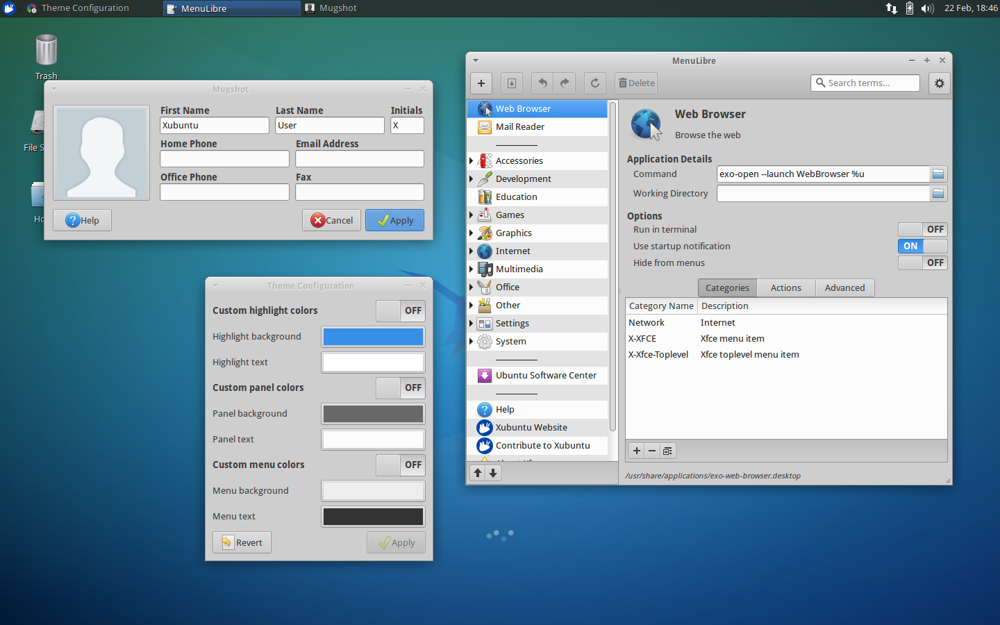
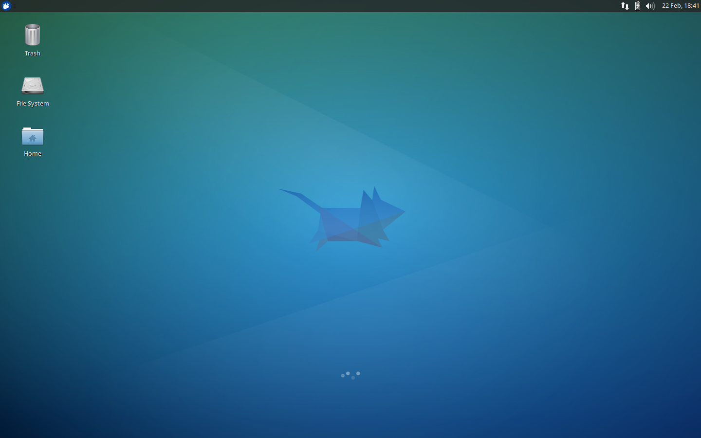
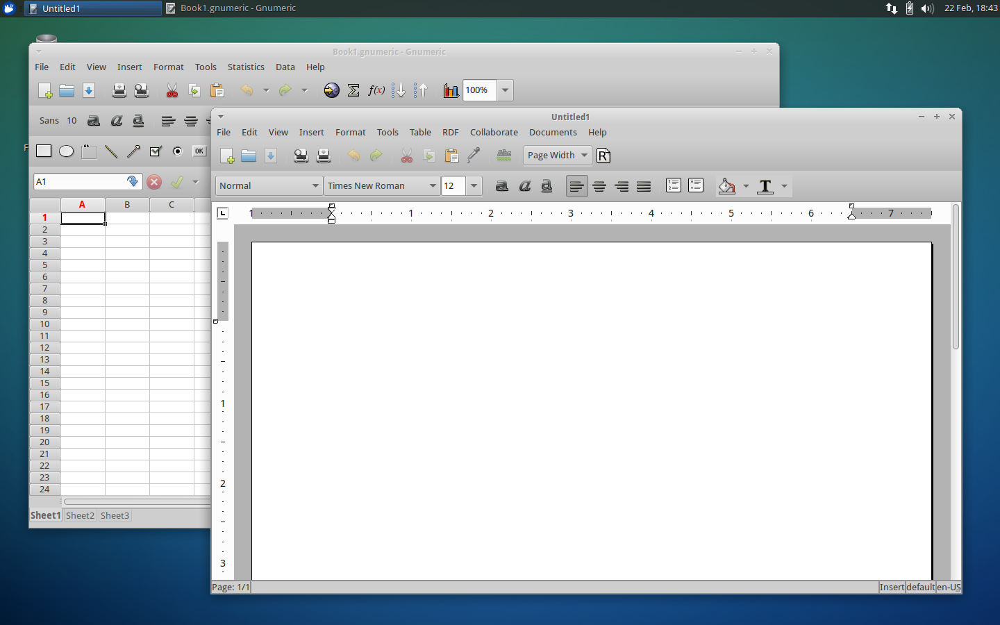
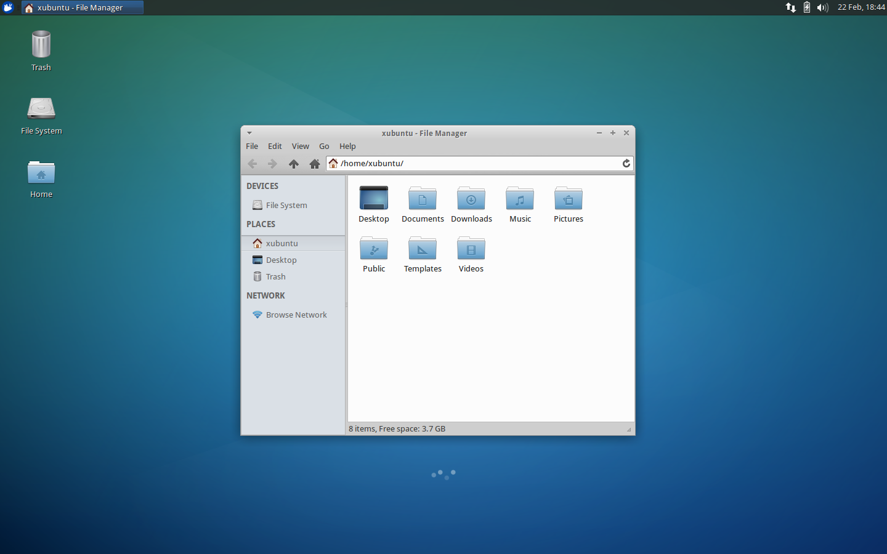
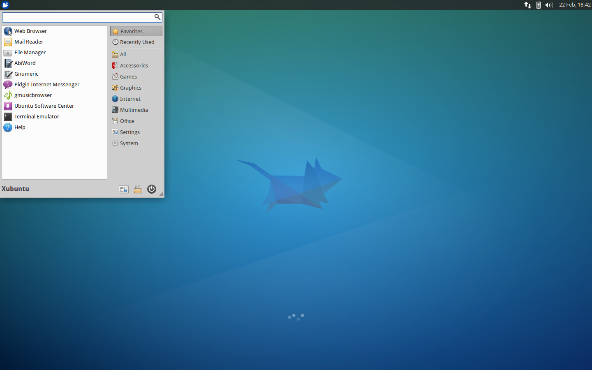
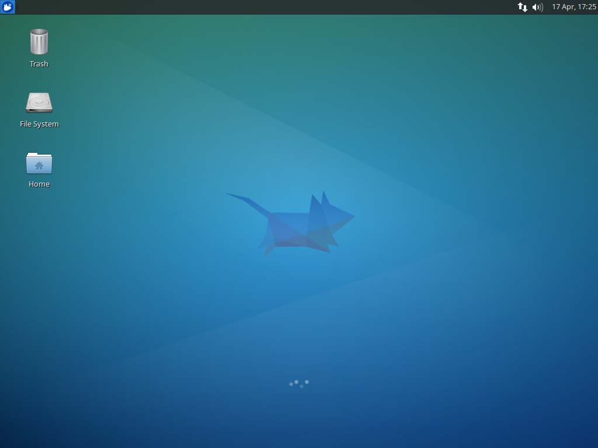
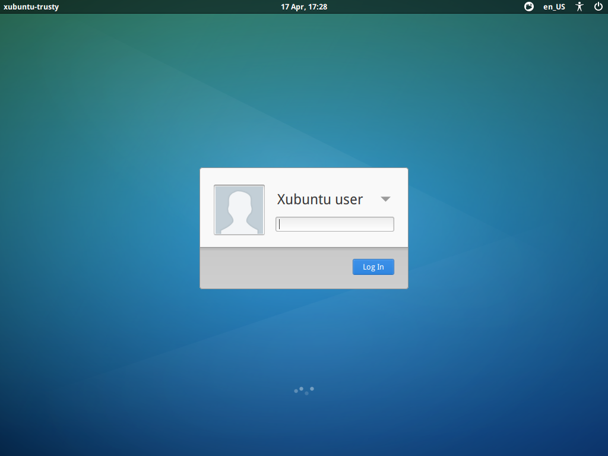
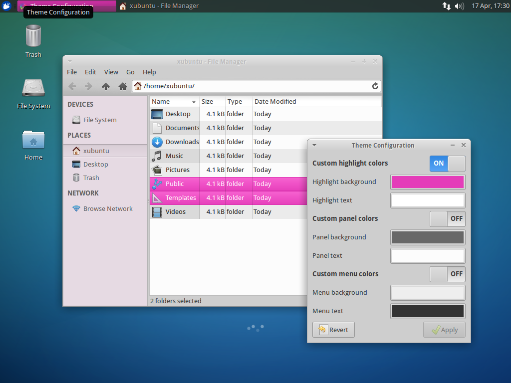
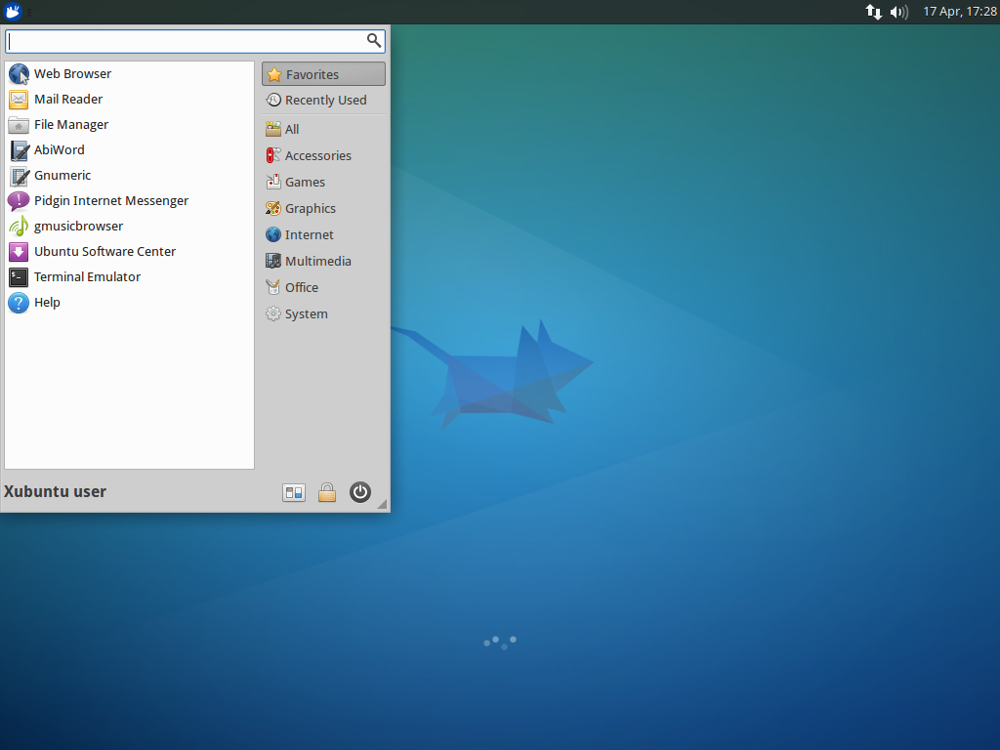

Xubuntu 14.04
New features and applications for Xubuntu 14.04 LTS included Xfdesktop 4.11 and Mugshot user account profile tool. MenuLibre replaced Alacarte as the menu editor and and Light locker became the default login manager, also replacing xscreensaver. Whisker menu was added as the default menu applet in the panel.
- Codename
- Trusty Tahr
- Release Date
- April 17, 2014
- End of Life
- April 17, 2017
Downloads
Torrents Highly recommended!
Direct Downloads Click to open!
Articles
-
Xubuntu 14.04.2 released
February 19, 2015
-
5 Things to Do After Upgrading from 12.04 to 14.04
August 2, 2014
-
Xubuntu 14.04.1 released
July 25, 2014
-
Screen locking in Xubuntu 14.04
May 19, 2014
-
Xubuntu 14.04 QA Recap
April 28, 2014
-
Xubuntu 14.04 released!
April 17, 2014
-
Xubuntu 14.04 Final Beta
March 27, 2014
-
Xubuntu 14.04 Beta 1
February 27, 2014
-
Xubuntu community wallpaper contest winners
January 29, 2014
-
Xubuntu 14.04 Alpha 2
January 23, 2014
-
Xubuntu 14.04 Alpha 1
December 19, 2013
-
Help us test Xubuntu 14.04 LTS
November 22, 2013
-
Xubuntu 14.04 Default Wallpapers
November 14, 2013
In the Press
Release Media








